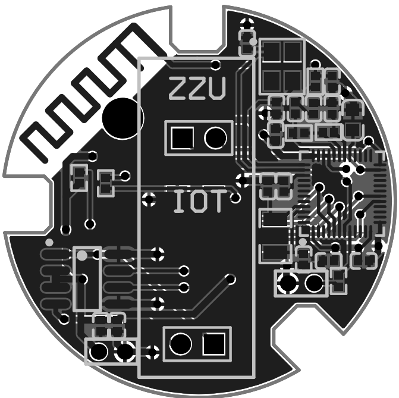
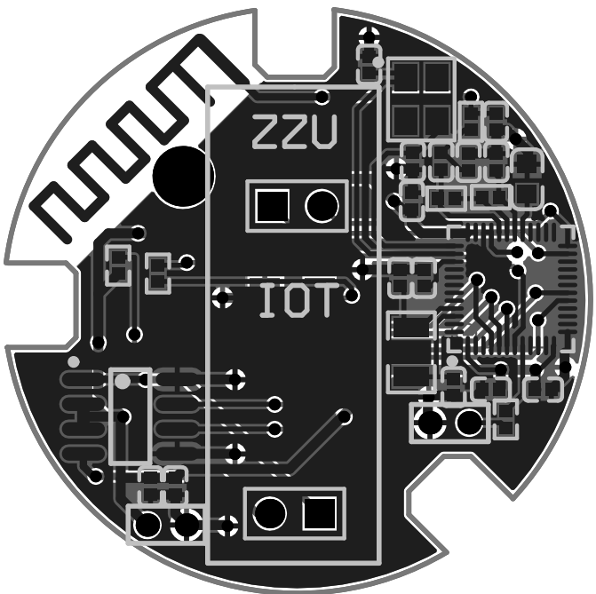

INTRODUCTION
BACKGROUND
Traditional mechanical lock cylinders need to be used with keys, and keys and mobile phones must be carried with people in their daily lives. If the functions of keys are incorporated into mobile phones, people can only bring mobile phones.
A Bluetooth Low Energy (Bluetooth Low Energy, BLE for short below) technology is a data transmission technology specially designed for a terminal device that uses a battery. The Bluetooth Low Energy technology has an advantage of low power consumption, and is widely used for data transmission between a terminal device such as a mobile phone, a notebook computer, or a PAD and a Bluetooth peripheral device.
With continuous development and application of the electronic Internet, people use more and more electronic devices for interaction, for example, wearable devices and mobile phone terminals, smart key devices and mobile phone terminals, and at the same time, a battery of the electronic device needs to consume more and more power. Therefore, to prolong a standby time of the electronic device, The application of BLE technology in electronic equipment will become a problem to be solved by all kinds of electronic equipment manufacturers.
MOTIVATION & GOALS
Compared with traditional mechanical locks, we can unlock the lock just through our cell phone, which will bring great convenience to our life. Therefore, we realized a prototype of Bluetooth lock based on nRF51822, and focused on unlocking speed, stability, and power consumption.
METHOD
This work is divided into 3 parts. The first part is the circuit board design, the board contains mainly nRF1822, voltage regulator circuit, USB to serial port, and indicator lights, the challenge we encountered was to deploy all the components on a circular PCB with a radius of 1cm.
The second part is an embedded program we wrote based on the SDK for transmitting Bluetooth signals, accepting phone connections, password verification, and feedback on lock status and battery level. The most critical part is the hibernation program, which can wake up the Bluetooth lock through a physical button and the Bluetooth lock starts working. After the task is completed, it enters the hibernation state again.
The third part is the mobile application part, which obtains the ID of the target lock by scanning the code, then searches for the Bluetooth signal and connects it, initiates the unlocking command, and obtains the status information and the circuit, and finally displays it.
KEYWORDS
Edge Computing Sensor Kit, Information Fusion, Machine Learning, Real-time Activity Recognition, Digital Twin, Data Visualization.
MATERIAL
Photo and video taken at Zhengzhou University, 2018. There were a lot of fun moments that weren't recorded. The lock molds in the pictures are from elinksmart.
HARDWARE
 


Figure 1. Circuit with a radius of 1 cm.

Figure 2. Based on existing molds, 3 Bluetooth locks were made.
Figure 3. Printed PCB.
EXPERIMENT
Video 1. Testing the Bluetooth lock via cell phone. The picture on the right shows another signal we made, the mold was printed through a 3D printer.